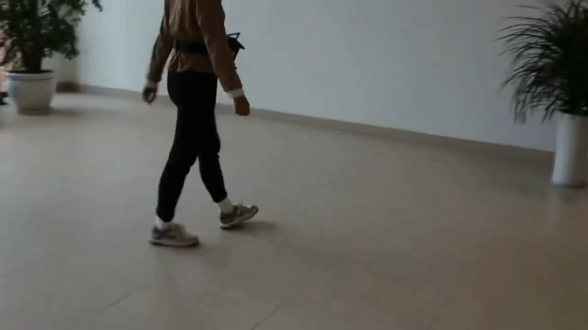
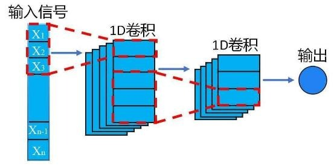
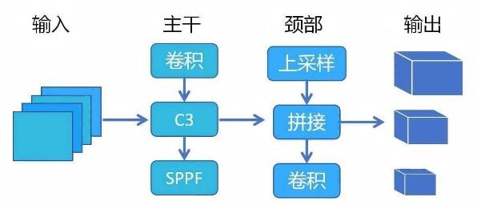

有效问卷
受访者以老年人的直接看护者为主，为功能取舍与交互设计提供依据。
生物医学工程 / 可穿戴设备
把跌倒检测与环境障碍识别放进一套穿戴式系统。以树莓派为边缘计算平台，在设备本地完成感知与推理，再通过语音和蜂窝通信连接提醒与求助。

项目面向老年人日常出行与居家活动中的跌倒风险。团队通过临床走访与问卷收集需求，希望设备既能感知身体运动，也能识别前方障碍，并减少对手机配对和持续联网的依赖。
受访者以老年人的直接看护者为主，为功能取舍与交互设计提供依据。
因此采用本地语音反馈，让使用者及时听到环境提醒。
因此将算法部署到设备端，开机后自动运行。
问卷数据来自项目答辩材料，共 49 份有效问卷，反映本次调研样本的反馈。
02 / SYSTEM DESIGN
运动状态与环境信息并行处理
识别之后，衔接本地提示与远程告警。
六轴运动时间序列
1D-CNN 跌倒分类
实时图像输入
YOLOv5s 障碍识别
本地推理与事件判断
TorchScript / ONNX播报识别到的障碍物
通过蜂窝通信模块触发求助
感知与推理无需 Wi-Fi、蓝牙或云服务器；短信和电话功能通过蜂窝移动网络工作。
MOTION / 1D-CNN
使用滑动窗口组织惯性数据，窗口长度为 100，步长为 20。通过时间与幅度扰动增强数据，两层一维卷积提取特征，再由全连接分类器输出结果。

VISION / YOLOv5s
从实拍视频中提取图像帧并手动标注，构建约 1,000 张、覆盖 17 类目标的训练数据。微调预训练 YOLOv5s 模型，导出 ONNX 并部署到树莓派。

03 / IN THE LAB
保留项目中的真实实验影像
点击视频播放，点击图片放大。
04 / EVALUATION
以下指标为答辩材料报告的项目测试结果。
跌倒分类准确率
跌倒分类召回率
目标检测 mAP@0.5
目标检测 mAP@0.5:0.95
答辩总结记录样机已实现 6 类目标本地识别，并完成短信与通话测试。训练数据的 17 类覆盖范围与样机演示范围分别呈现。
结果来自项目内部测试与答辩记录，尚不等同于真实老年人长期使用场景中的临床验证结果。
项目开发文档保留了摄像头与 IMU 采集、树莓派 Python 环境配置、音频播放、串口通信和开机自启等联调记录。这些工作把单独的算法模块连接为可操作的设备原型。
通过 systemd 管理主程序，配置工作目录、运行环境与异常重启，减少使用者的操作步骤。
通过串口和 AT 指令联调移远 EC20 / 4G 模块，记录短信、电话及 GPS 接口的开发过程。
将按键、音频播放和传感器接入主程序，验证从数据输入到提示、告警输出的系统链路。
此处展示团队项目的系统设计与开发过程；个人参与内容以主页简历记录为依据。
06 / NEXT STEPS
下一步计划丰富语音提示逻辑，加入目标距离与危险等级判断；优化电源、功耗和状态指示，并探索更舒适的设备形态与远程联动方式。
返回全部项目 ↗